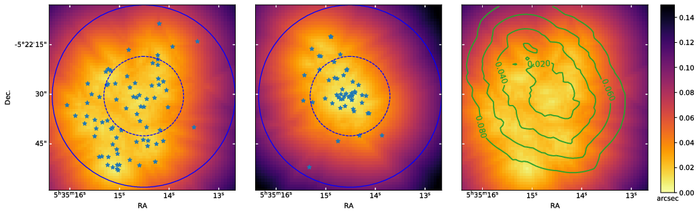
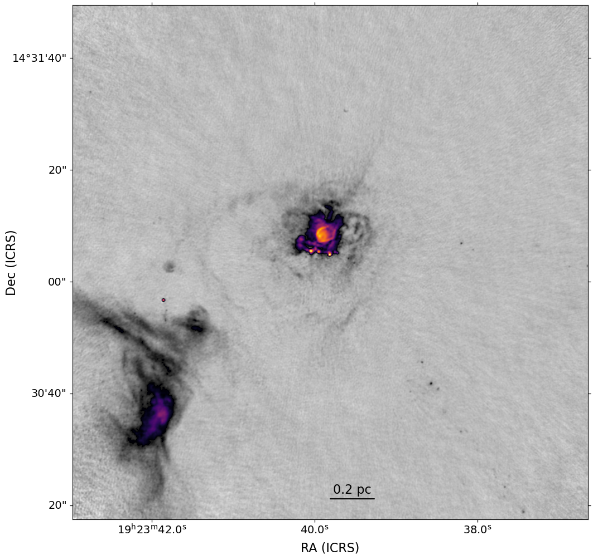

Ringberg ISM 2021
Cluster formation and fragmentation (CMF, IMF) ... or maybe more scattered questions about HMYSOs
- Postdoc: Allison Towner
- PhD: Desmond Jeff, Theo Richardson, Alyssa Bulatek, Nazar Budaiev
- REU: Justin Otter, Danielle Bovie, Josh Machado, Sydney Petz
- Undergrad: Madeline Hall, Michael Fero, Derod Deal, Parker Ormonde, Aden Dawson, Helen Radomski, Brice Tingle, Oketa Basha, Morgan Himes
Slides available at https://keflavich.github.io/talks/RingbergISM2021.html
Questions about HMYSOs & clusters:
- How dense are forming clusters? (stellar density)
- Dense enough to form high-mass stars by collisions?
- Possible approach: ALMA-LB observations
- How massive are YSOs?
- Luminosity, dust-mass estimates are really bad
- Possible approach: Dynamical mass measurements. Salt disks? Masers?
- Do HMYSOs get their mass through disks?
- We see disks, but mostly they have little mass compared to the stars
- Competitive accretion? Inertial inflow? Collisions?
How dense are cluster-forming regions?

OMC1 is denser than the ONC

N*OMC(Otter+ 2021) = 1.6 x 105 pc-3
N*ONC(Otter+ 2021) = 0.6 x 105 pc-3
N*ONC(Hillenbrand+ 1998) = 0.2 x 105 pc-3
Many new disks in the OMC

 Otter+, resubmitted
Otter+, resubmitted
FOV: 0.07 pc (16000 AU)
72 YSOs
One "hot core"
Disk Gallery

Salts in Orion
Orion Source I
a disk around a 15 M⊙ YSO
Salt: NaCl


Left: Tanaka+ 2020, pair of NaCl-bearing disks.
Right: G17, Maud+ 2020


Right: G17, Maud+ 2020
Temperature?
Temperature?
A contrived model
Observing the Keplerian rotation profile of a disk is the most direct way to measure a protostar's mass
(we can only see the disk, not the star itself)
W51 e2e: Too optically thick at 1mm to measure disk
CS v=0 J=1-0 and v=0 J=2-1 masers trace the disk?
CS maser conditions
van der Walt+ 2020- Top: CS J=1-0, Bottom: CS J=2-1
- Red: Consistent w/W51e2e observations
- Masers do not coexist; require different specific CS column
(N2-1=1015.6, N1-01016.1 cm-2) - Require high abundance (XCS > 10-5)
- Hot (300-500 K), moderate-density (n~105 cm-3): Disk surface? Or outflow cavity wall?
We can use salts to measure HMYSO masses
- NaCl, KCl are only in the disk, not the outflow (water traces both)
- NaCl is detected in at least two other HMYSOs
(Tanaka+ 2020, Maud+ in prep)
- Salts are observable with ALMA, the JVLA, and the future ngVLA
- Future projects will involve observing and modeling salt disks to measure HMYSO masses
Zooming in: W51-IRS2
Zooming in: W51-IRS2
Zooming in: W51-IRS2
Goddi+ 2020: The outflow (& disk) around W51 North changed direction by ~50 deg
in < 100 years.
Questions about HMYSOs & clusters:
- How dense are forming clusters? (stellar density)
- Dense enough to form high-mass stars by collisions?
- Possible approach: ALMA-LB observations
- How massive are YSOs?
- Luminosity, dust-mass estimates are really bad
- Possible approach: Dynamical mass measurements. Salt disks? Masers?
- Do HMYSOs get their mass through disks?
- We see disks, but mostly they have little mass compared to the stars
- Competitive accretion? Inertial inflow? Collisions?